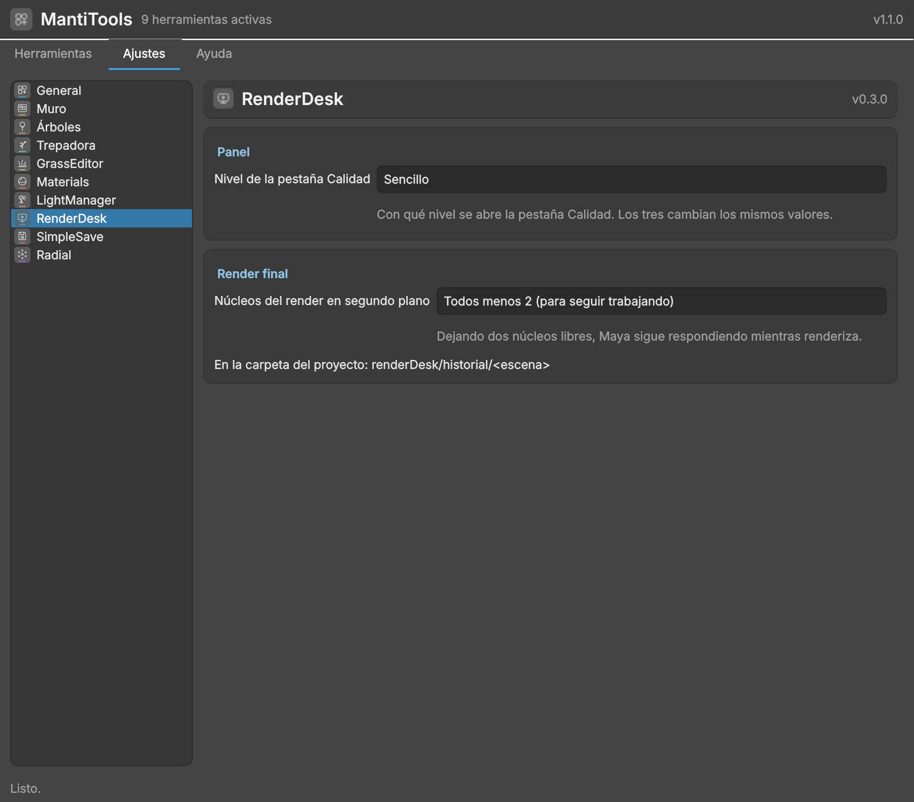

Para qué sirve
RenderDesk junta en un solo panel, acoplado al visor de Arnold, todo lo que hace falta para renderizar: la cámara y el tamaño de prueba, los ajustes de calidad y unos presets que se combinan. Está ordenado como se trabaja: preparar, probar, afinar y renderizar.
Abrirlo
Clic en el icono RenderDesk abre el panel junto al visor de Arnold (Arnold RenderView). Con clic derecho:
- Modo render: un espacio de trabajo con el visor de Maya, el de Arnold y el panel a la vez. Vuelve a pulsarlo para regresar a tu espacio de trabajo.
- Probar / parar: arranca o para el render interactivo.
- Instantánea: guarda la prueba que se ve en el historial.

Presets que se combinan
En vez de un preset cerrado, se elige una pieza de cada fila y RenderDesk las suma:
| Pieza | Opciones |
|---|---|
| Calidad | Borrador (rápido, para colocar luces y cámara) · Revisión (para juzgar materiales y luz) · Final (la imagen que se entrega) |
| Tipo de escena | Producto · Interior · Exterior |
| Extras | Vidrio y líquidos · Piel, cera y mármol (SSS) · Hojas y hierba con recorte · Niebla y volúmenes · Desenfoque de movimiento |
| Salida | Imagen fija · Secuencia · Giro 360° |
Antes de aplicar, RenderDesk guarda una copia de los ajustes que había: Restaurar lo que tenía vuelve a ellos.
Consejo
Para escenas con hiedra de Trepadora o hierba de GrassEditor, añade el extra Hojas y hierba con recorte.
Calidad en tres niveles
La pestaña Calidad enseña los mismos valores con tres niveles de detalle:
- Sencillo: qué quieres y qué hay en la escena, sin números.
- Detalle: los mismos valores con deslizadores de nombre claro.
- Experto: los atributos de Arnold tal cual, con su valor de fábrica al lado.
El nivel con el que se abre se elige en Ajustes.
Probar y comparar
- Pulsa Probar en la barra del panel. Puedes limitar la prueba a una región.
- Cuando te guste, Instantánea: la prueba se guarda en
<proyecto>/renderDesk/historial/<escena>/, con la imagen y todos sus ajustes. - La tira del historial muestra cada prueba con su número y su tiempo («#3 · 41 s»).
- Comparar: con una prueba elegida, se compara con lo que se ve ahora; con dos, entre sí. Sale una vista A/B con un corte que se arrastra.
- Recuperar ajustes vuelve a poner el preset, la cámara y el tamaño de esa prueba.

Salida
| Parte | Qué hace |
|---|---|
| Qué renderizar | Imagen fija, Secuencia o Giro 360° (secuencia y giro fijan el ruido para que no parpadee) |
| Crear cámara que gira | Una cámara que da una vuelta alrededor de lo seleccionado, a la distancia justa |
| Formato | PNG o EXR |
| Nombre | Escena y cámara, solo escena o solo cámara, con un ejemplo de ruta |
| Pasadas (AOV) | Ninguna, Básicas o Composición (con albedo, Z, normales y Cryptomatte) |
| Núcleos | Todos menos 2 (para seguir trabajando), todos o la mitad |
| Final estimado | Cuánto tardará, calculado con tu última prueba |
Render final en segundo plano
En Salida › Render final, RenderDesk guarda una copia de la escena tal como está y la renderiza con Arnold en otro proceso, sin bloquear Maya: puedes seguir trabajando mientras tanto. Una tarjeta enseña el progreso («Fotograma 48 de 120 · 60 % · quedan unos 44 s»). Al terminar avisa en el visor y ofrece Abrir carpeta. Cancelar lo para.
En el estante
| Cómo | Orden |
|---|---|
| Clic en el icono | Abrir RenderDesk |
| Clic derecho | Modo render |
| Clic derecho | Probar / parar |
| Clic derecho | Instantánea |
Ajustes en MantiTools

Panel
| Ajuste | Valores | Qué hace | Clave |
|---|---|---|---|
| Nivel de la pestaña Calidad | Sencillo, Detalle, Experto | Con qué nivel se abre la pestaña Calidad. Los tres cambian los mismos valores. | nivel |
Render final
| Ajuste | Valores | Qué hace | Clave |
|---|---|---|---|
| Núcleos del render en segundo plano | Todos menos 2 (para seguir trabajando), Todos, La mitad | Dejando dos núcleos libres, Maya sigue respondiendo mientras renderiza. | nucleos |